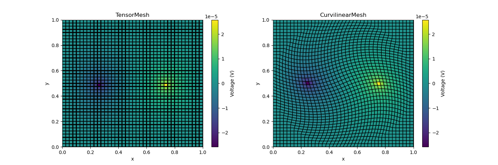

Note
Click here to download the full example code
Basic Forward 2D DC Resistivity¶
2D DC forward modeling example with Tensor and Curvilinear Meshes
Out:
/home/travis/build/simpeg/discretize/examples/plot_dc_resistivity.py:64: UserWarning: Matplotlib is currently using agg, which is a non-GUI backend, so cannot show the figure.
plt.show()
import discretize
from pymatsolver import SolverLU
import numpy as np
import matplotlib.pyplot as plt
def run(plotIt=True):
# Step1: Generate Tensor and Curvilinear Mesh
sz = [40, 40]
tM = discretize.TensorMesh(sz)
rM = discretize.CurvilinearMesh(discretize.utils.exampleLrmGrid(sz, 'rotate'))
# Step2: Direct Current (DC) operator
def DCfun(mesh, pts):
D = mesh.faceDiv
sigma = 1e-2*np.ones(mesh.nC)
MsigI = mesh.getFaceInnerProduct(sigma, invProp=True, invMat=True)
A = -D*MsigI*D.T
A[-1, -1] /= mesh.vol[-1] # Remove null space
rhs = np.zeros(mesh.nC)
txind = discretize.utils.closestPoints(mesh, pts)
rhs[txind] = np.r_[1, -1]
return A, rhs
pts = np.vstack((np.r_[0.25, 0.5], np.r_[0.75, 0.5]))
# Step3: Solve DC problem (LU solver)
AtM, rhstM = DCfun(tM, pts)
AinvtM = SolverLU(AtM)
phitM = AinvtM*rhstM
ArM, rhsrM = DCfun(rM, pts)
AinvrM = SolverLU(ArM)
phirM = AinvrM*rhsrM
if not plotIt:
return
# Step4: Making Figure
fig, axes = plt.subplots(1, 2, figsize=(12*1.2, 4*1.2))
vmin, vmax = phitM.min(), phitM.max()
dat = tM.plotImage(phitM, ax=axes[0], clim=(vmin, vmax), grid=True)
cb0 = plt.colorbar(dat[0], ax=axes[0])
cb0.set_label("Voltage (V)")
axes[0].set_title('TensorMesh')
dat = rM.plotImage(phirM, ax=axes[1], clim=(vmin, vmax), grid=True)
cb1 = plt.colorbar(dat[0], ax=axes[1])
cb1.set_label("Voltage (V)")
axes[1].set_title('CurvilinearMesh')
if __name__ == '__main__':
run()
plt.show()
Total running time of the script: ( 0 minutes 0.576 seconds)